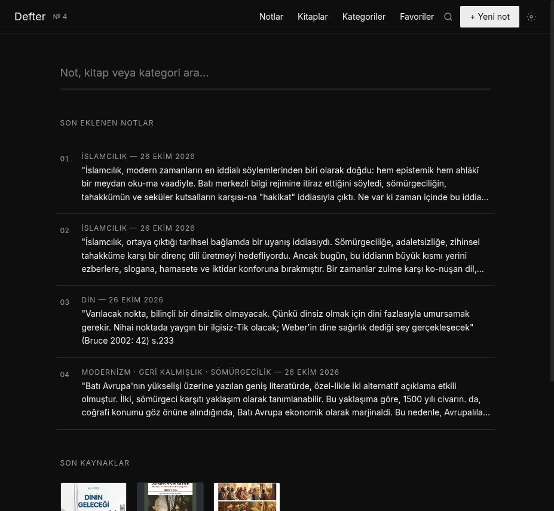
Defter, okuduğu kitap ve dergilerden not ve alıntı biriktiren bir kişi için özel olarak geliştirdiğim bir dijital not defteri. Amaç basit: okurken altı çizilen bir cümleyi hızla kaydetmek, onu hangi kitaptan ve hangi sayfadan aldığını kaybetmeden saklamak, aylar sonra tek bir kelimeyle geri bulabilmek.
Uygulama tek bir kişiye hizmet ettiği için herkese açık değil: arama motorlarına kapalı ve yalnızca sahibinin onayladığı cihazlardan açılabiliyor. Bu yüzden canlı bir bağlantı veya kaynak kodu yerine burada ekran görüntüleriyle anlatıyorum.
Defter is a digital notebook I built for one person who collects notes and quotes from the books and magazines they read. The goal is simple: capture an underlined sentence quickly, keep it tied to the exact book and page it came from, and find it again months later with a single word.
Because the app serves a single owner, it is not public: it is hidden from search engines and opens only on devices the owner has approved. So instead of a live link or source code, I'm presenting it here with screenshots.
Kitap okurken alınan notlar genellikle dağınık bir hâlde kalır: kitap kenarlarında, telefon notlarında, fotoğraflarda. Sonradan bir alıntıyı bulmak, kaynağını doğru göstermek ya da bir konudaki tüm notları bir araya getirmek zorlaşır. Hazır not uygulamaları ise genel amaçlıdır; "bu not hangi kitabın kaçıncı baskısından, hangi sayfadan" gibi bilgileri yapısal olarak tutmaz.
Reading notes tend to end up scattered — in book margins, phone notes, photos. Finding a quote later, citing it correctly, or pulling together every note on a topic becomes hard. General-purpose note apps don't store structured information like "which edition of which book, which page".
Defter'de her not bir kaynağa (kitap veya dergi) ve bir veya birden fazla kategoriye bağlanır. Kaynaklar yazar, yayınevi, yıl, baskı ve basım yeri gibi künye bilgileriyle saklanır; böylece bir alıntı her zaman tam künyesiyle birlikte görünür. Arama, kategori ve kaynak sayfaları bu yapının üzerine kuruludur; tüm notlar istenildiği an Word belgesine dönüştürülebilir.
In Defter, every note is linked to a source (a book or a magazine) and one or more categories. Sources store full bibliographic details — author, publisher, year, edition, place of publication — so a quote always appears with its complete citation. Search, category and source pages are built on this structure, and any set of notes can be exported to a Word document at any time.
Sade, okumaya odaklı arayüz A calm, reading-first interface
Monokrom, tipografi ağırlıklı bir tasarım. Ana sayfada arama kutusu, numaralandırılmış "Son eklenen notlar" listesi ve kapak görselleriyle "Son kaynaklar" yer alıyor. Üst bardaki № göstergesi toplam not sayısını gösteriyor — bir defterin sayfa numarası gibi.
A monochrome, typography-led design. The home page has a search bar, a numbered "Recently added notes" list and a "Recent sources" shelf with cover images. The № counter in the top bar shows the total number of notes — like the page number of a notebook.
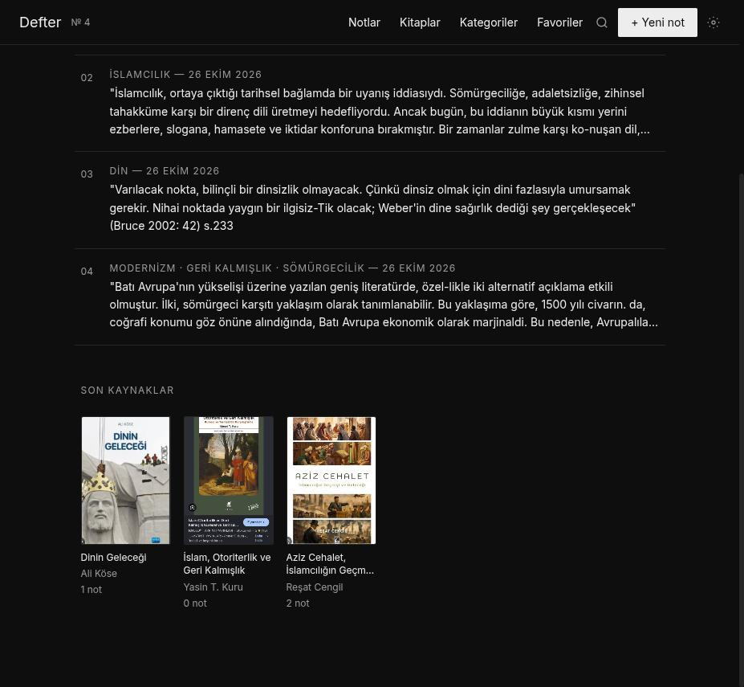
Notlar ve not detayı Notes and note view
Her not; kategorileri, eklenme tarihi ve içerikten oluşan bir satır olarak listeleniyor. Not açıldığında alıntı büyük puntoyla, altında kaynağın tam künyesiyle gösteriliyor. Not üzerinde Favori, Düzenle, Kopyala ve Sil işlemleri yapılabiliyor; kaynak satırı tıklanarak doğrudan kitabın sayfasına geçiliyor.
Each note is listed with its categories, date and content. Opening a note shows the quote in large type with its full citation underneath. Notes can be favourited, edited, copied or deleted, and the citation line links straight to the source's page.
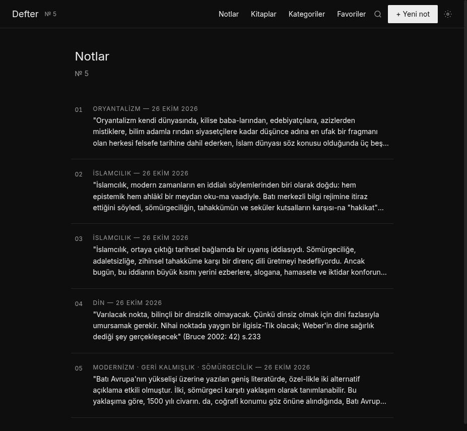
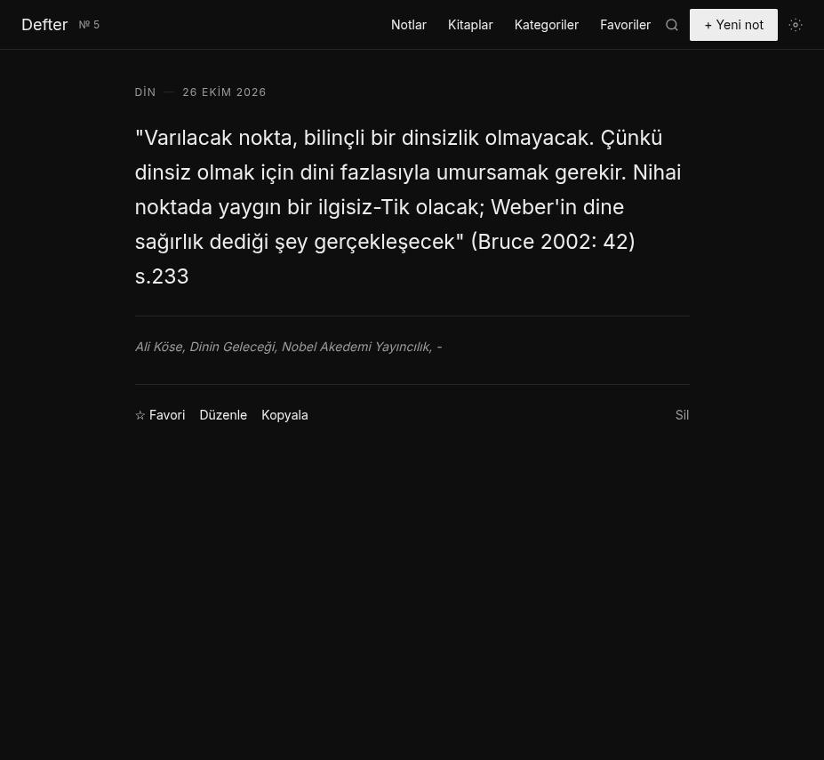
Kitaplar ve dergiler Books and magazines
Kaynaklar kapak görselleriyle bir rafta duruyormuş gibi listeleniyor; Tümü / Kitaplar / Dergiler sekmeleriyle filtrelenebiliyor. Her kaynağın altında kaç not bağlı olduğu yazıyor. Kaynak sayfasında tam künye, bağlı notlar ve sayfa numarası veya eklenme tarihine göre sıralama seçenekleri var. O kitaba doğrudan not eklenebiliyor ya da tüm notlar tek tıkla Word'e aktarılabiliyor. Yeni kaynak formu türe göre değişiyor — kitap ve dergi için farklı zorunlu alanlar sunuyor.
Sources are shown with their covers like books on a shelf, filterable with All / Books / Magazines tabs, each showing how many notes are attached. A source page shows the full citation, all linked notes and sorting by page number or date added. Notes can be added directly to that book, and all of its notes can be exported to Word in one click. The new-source form adapts to the type — different required fields for books and magazines.
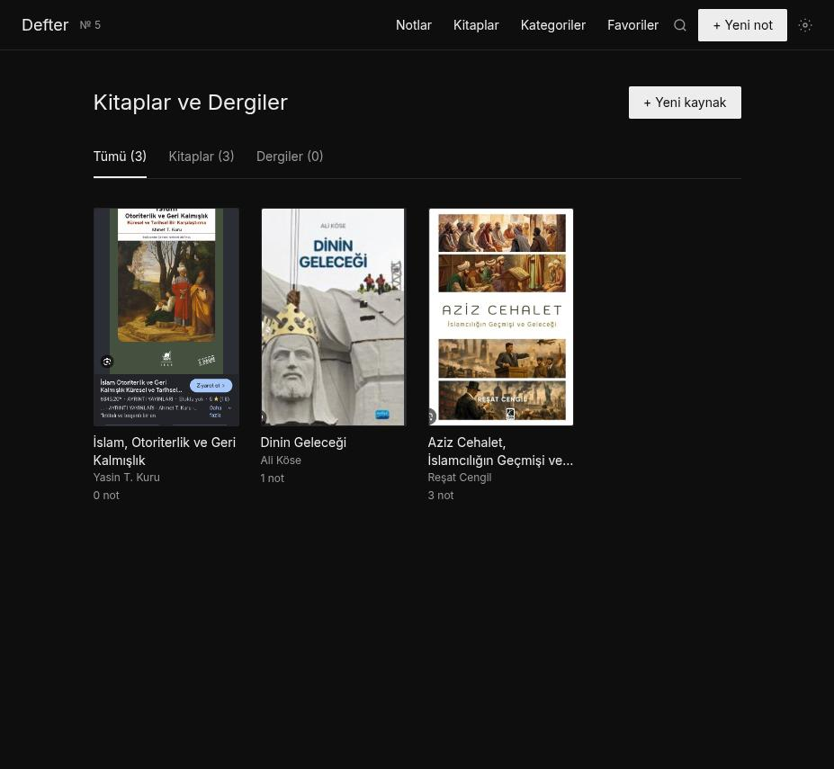
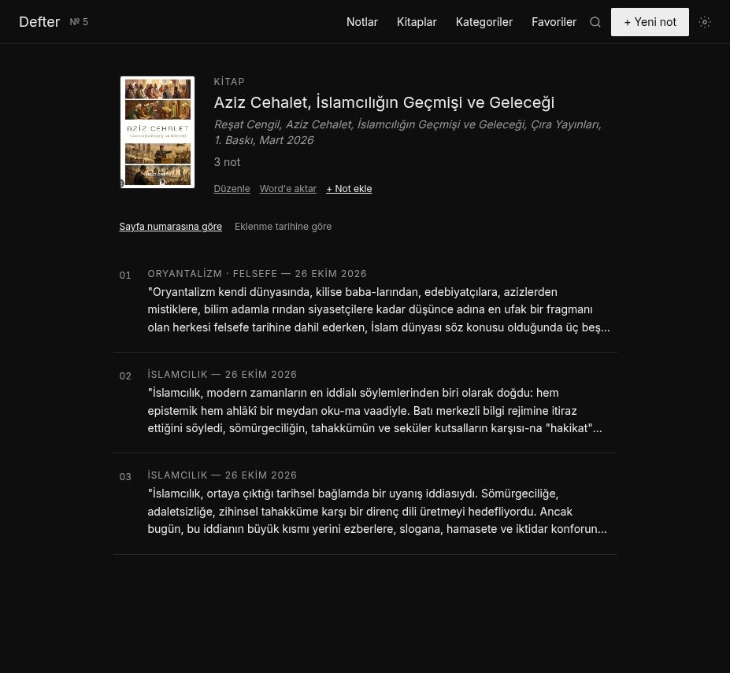
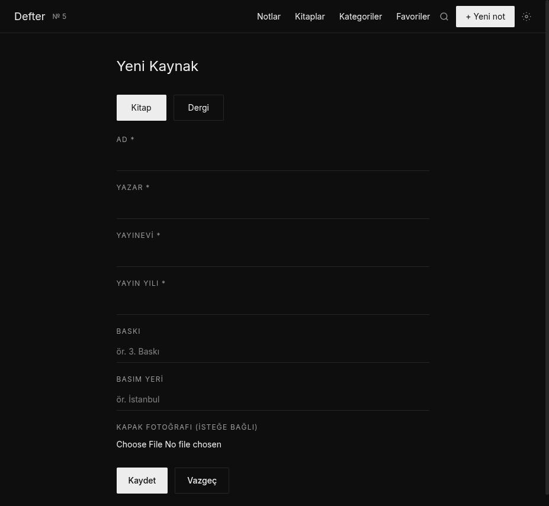
Kategoriler Categories
Notlar konu bazlı kategorilerle etiketleniyor. Kategoriler sayfasında yeni kategori eklenebiliyor, her kategorinin kaç not içerdiği görülüyor; kategoriler yeniden adlandırılabiliyor veya silinebiliyor. Bir not birden fazla kategoriye ait olabiliyor.
Notes are tagged by topic. The categories page lets you add categories, see how many notes each contains, and rename or delete them. A note can belong to several categories.
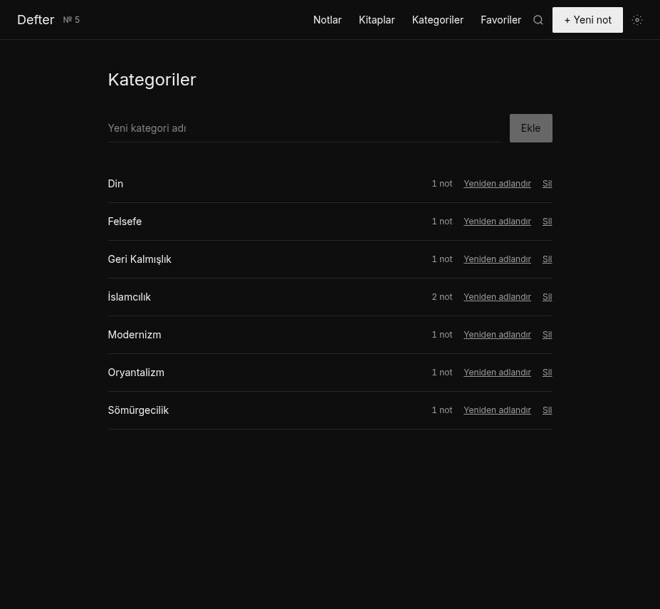
Türkçe karakter duyarlı anlık arama Instant search with Turkish character support
Arama yazarken sonuç veriyor ve sonuçları üç grupta topluyor: Kitaplar ve dergiler, Kategoriler ve Notlar. Eşleşen kelimeler not metninde vurgulanıyor ve eşleşmenin geçtiği yerden bir kesit gösteriliyor. Türkçe karakterleri doğru ele alıyor — "islam" araması "İslam" ve "İslamcılık" geçen notları buluyor. Arama sonuçları da doğrudan Word'e aktarılabiliyor. Arama kutusu / veya Ctrl+K kısayoluyla her yerden açılıyor.
Search returns results as you type, grouped into Books & magazines, Categories and Notes. Matching words are highlighted in a snippet of the note. It handles Turkish characters correctly — searching "islam" finds notes containing "İslam" and "İslamcılık". Search results can be exported to Word directly, and the search box opens from anywhere with / or Ctrl+K.
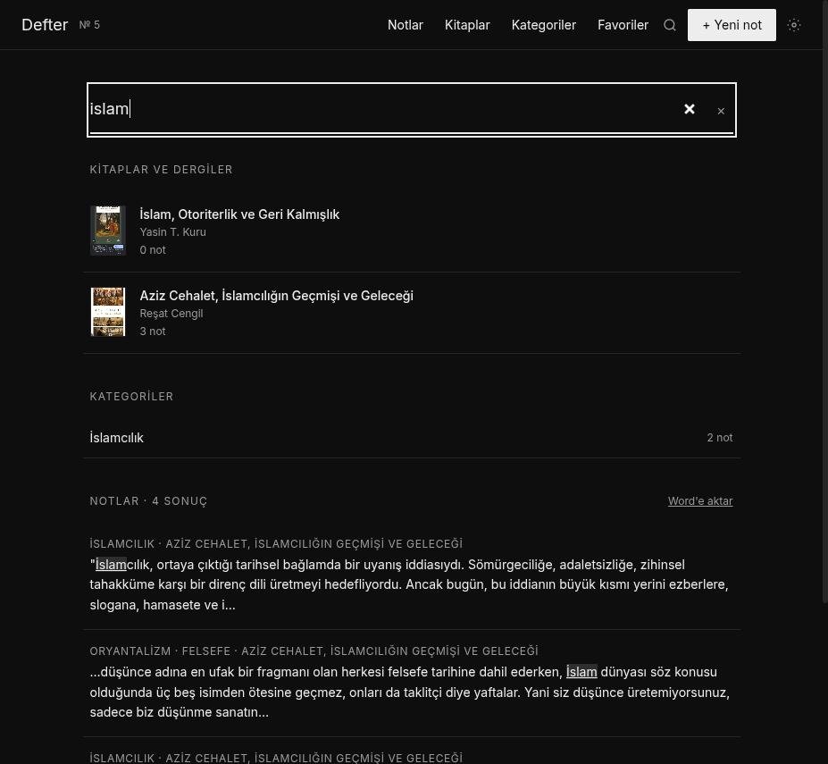
Zengin metin editörü Rich-text editor
Yeni not ekranında isteğe bağlı başlık, favori yıldızı ve bir biçimlendirme araç çubuğu var: kalın, italik, altı çizili, vurgu, H2/H3 başlıklar, madde ve numaralı liste, alıntı bloğu, geri al/yinele. Notun altında kategoriler eklenebiliyor ve kaynak, arama yapılarak mevcut kitap/dergiler arasından seçilebiliyor.
The new-note screen has an optional title, a favourite star and a formatting toolbar: bold, italic, underline, highlight, H2/H3 headings, bulleted and numbered lists, block quote, undo/redo. Categories can be added below the note, and the source is picked by searching existing books and magazines.
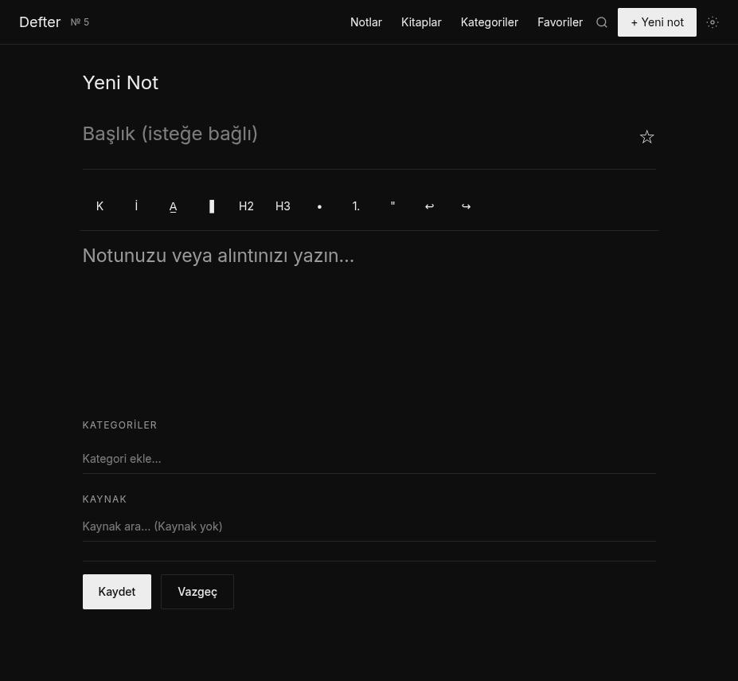
Word'e dışa aktarma Export to Word
Notlar .docx olarak indirilebiliyor. Dışa aktarma kapsamı seçilebiliyor: tüm notlar, sadece favoriler, bir kategori, bir kitap / dergi veya arama sonuçları. Böylece belirli bir konudaki alıntılar, makale veya ödev için hazır bir belge olarak alınabiliyor.
Notes can be downloaded as .docx, scoped to all notes, favourites only, a category, a book / magazine or search results — so the quotes on a topic can be pulled into a ready-made document for an essay or paper.
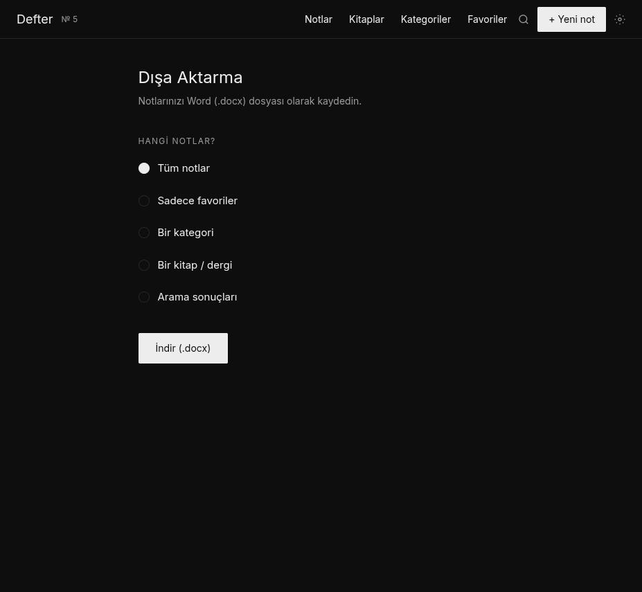
Okuma konforu ayarları Reading comfort settings
Tema Sistem / Açık / Koyu olarak seçilebiliyor; yazı boyutu dört kademede (Normal, Büyük, Daha büyük, En büyük) ayarlanabiliyor. Uzun alıntıları rahat okumak için tasarlanmış bir ayar — tercihler cihazda saklanıyor.
Theme can be set to System / Light / Dark, and text size to four steps (Normal, Large, Larger, Largest) — designed for reading long quotes comfortably. Preferences are stored on the device.
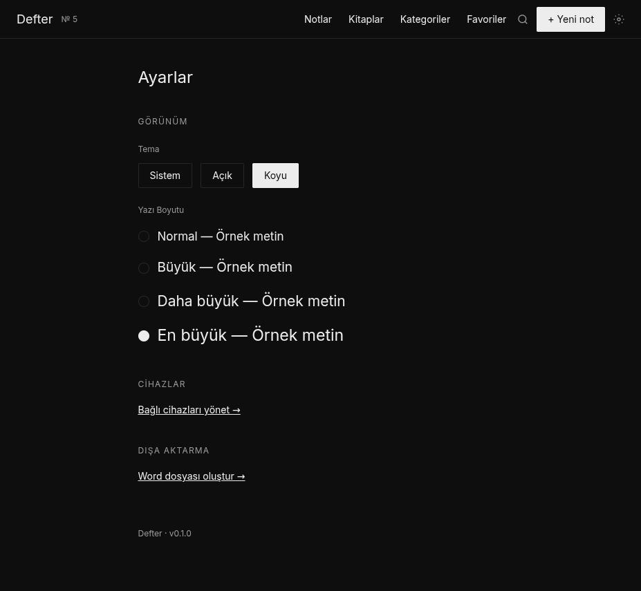
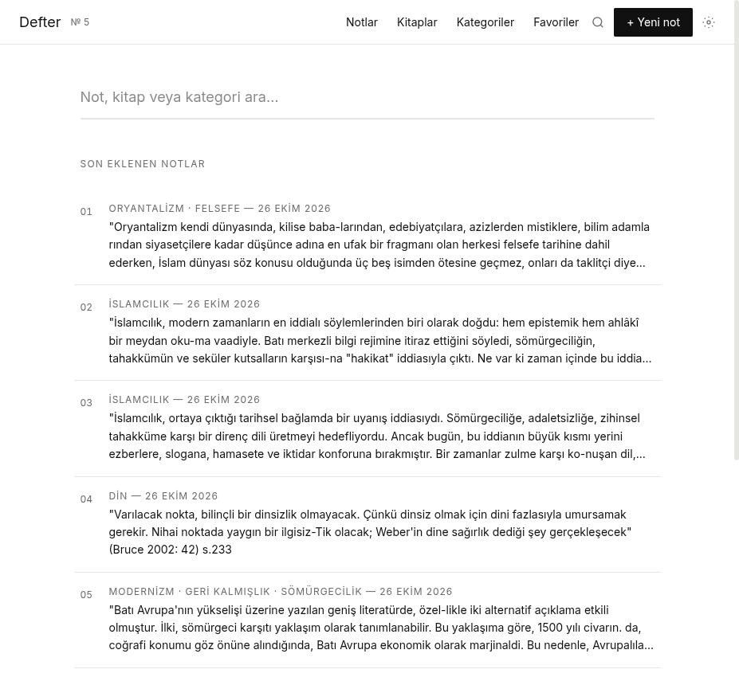
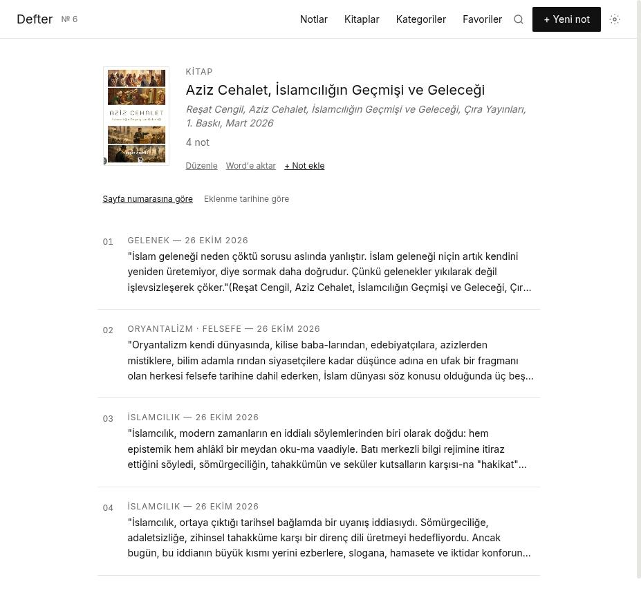
Şifresiz cihaz onaylı erişim Passwordless device-approval access
Uygulamaya klasik bir kullanıcı adı/şifre ekranı yerine cihaz onayı ile erişiliyor. Yeni bir cihaz ilk girişte bir kodla doğrulanıyor; onaylanan cihaz güvenilir olarak işaretleniyor ve sonraki girişlerde tekrar kod istenmiyor. "Bağlı cihazlar" ekranında her cihazın türü, tarayıcısı, onay tarihi ve son görülme zamanı listeleniyor; cihazlar yeniden adlandırılabiliyor ya da bağlantısı kesilebiliyor.
Instead of a username/password screen, access works through device approval. A new device is verified with a code on first sign-in; once approved it is trusted and no code is needed next time. The "Connected devices" screen lists each device's type, browser, approval date and last-seen time, and devices can be renamed or disconnected.
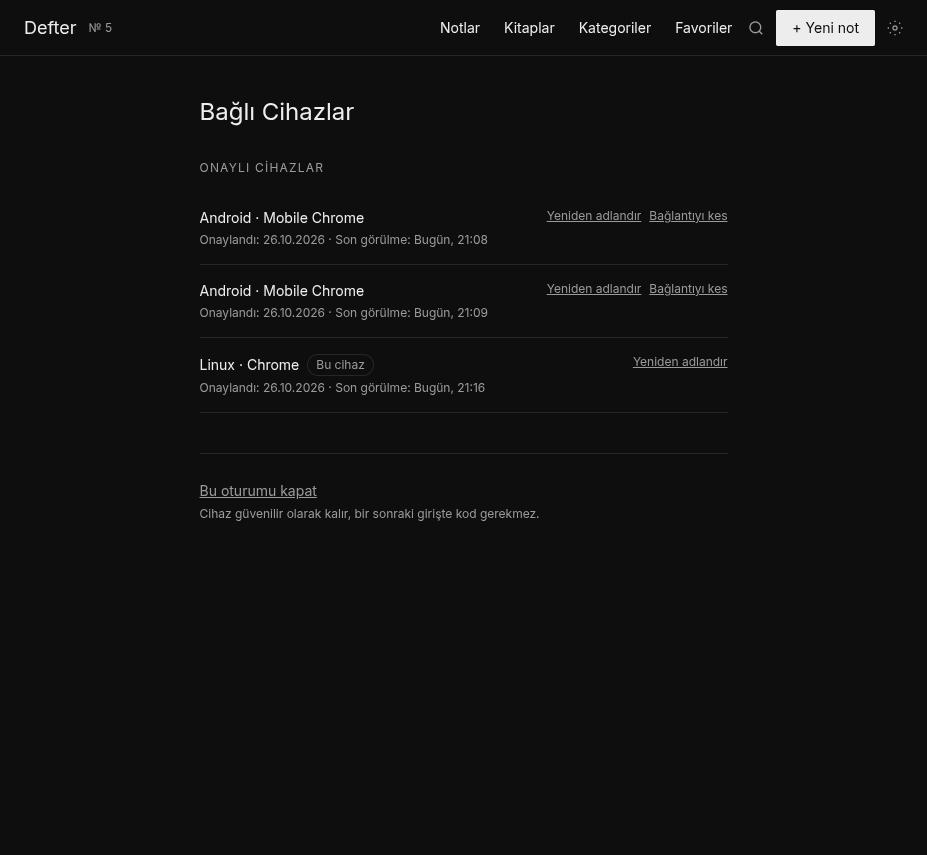
Mobil deneyim ve PWA Mobile experience and PWA
Mobilde üst menü yerini başparmakla kolay erişilen bir alt gezinme çubuğuna bırakıyor: Ana sayfa, Ara, ortada büyük + (yeni not), Kitaplar ve Menü. Uygulama bir web manifest'iyle ana ekrana eklenebiliyor ve tarayıcı çubuğu olmadan, bağımsız bir uygulama gibi açılıyor. Okurken telefondan hızlıca not almak için tasarlandı.
On mobile, the top menu is replaced by a thumb-friendly bottom navigation bar: Home, Search, a large central + (new note), Books and Menu. With a web manifest, the app can be added to the home screen and opens standalone, without browser chrome — made for jotting down a note from a phone while reading.
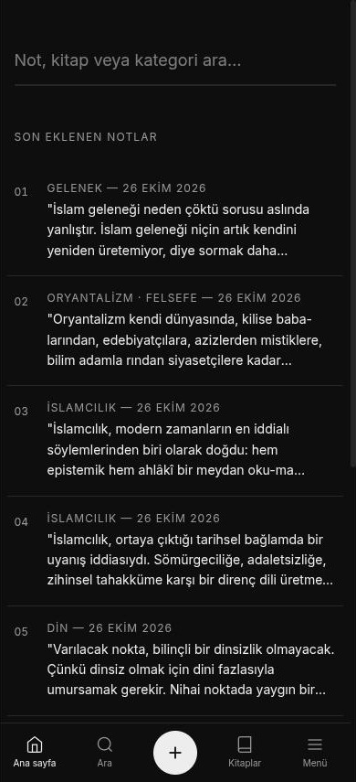
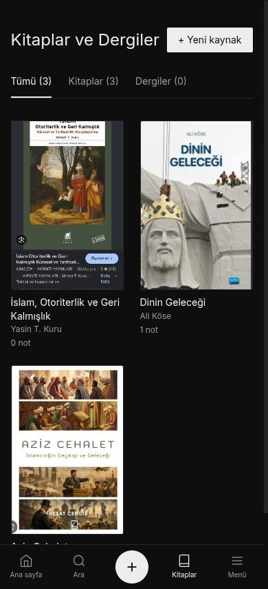
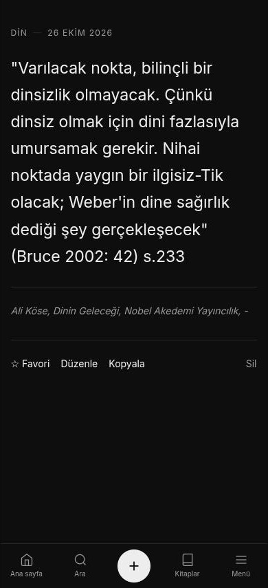
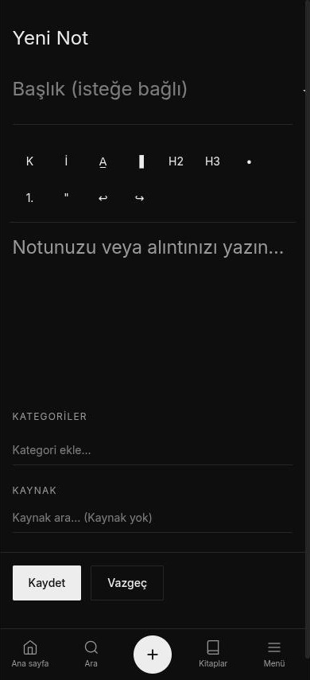
- Next.js + React Turbopack ile derleniyor; sayfalar arası geçişler istemci tarafında, yeniden yükleme olmadan gerçekleşiyor. Built with Turbopack; navigation between pages happens client-side without full reloads.
- Vercel Yayına alma ve barındırma Vercel üzerinde. Hosting and deployment on Vercel.
-
PWA
Web manifest ile kurulabilir;
standalonemodda açılıyor. Installable via web manifest; opens instandalonemode. -
Gizlilik
Privacy
Site
noindex, nofollow, noarchive, nosnippet, noimageindexbaşlıklarıyla arama motorlarına tamamen kapalı; içerik yalnızca onaylı cihazlarda görüntüleniyor. Fully excluded from search engines (noindex, nofollow, noarchive, nosnippet, noimageindex); content is visible only on approved devices. - Kalıcı ID'ler Stable IDs Not ve kaynak adresleri sıralanabilir, benzersiz kimliklerle (ULID biçiminde) oluşturuluyor. Note and source URLs use sortable unique IDs (ULID format).
- Tipografi Typography Inter; monokrom renk paleti ve geniş satır aralıklarıyla okumaya odaklı düzen. Inter; a monochrome palette and generous line spacing for a reading-focused layout.
- Erişilebilirlik Accessibility Editör düğmelerinde açıklayıcı etiketler; arama için / ve Ctrl+K kısayolları. Descriptive labels on editor buttons; / and Ctrl+K shortcuts for search.
Defter tek bir kişinin gerçek okuma notlarını tutan, aktif kullanımdaki özel bir uygulama. İçerik kişisel olduğu için site herkese kapalı ve kaynak kodu paylaşılmıyor. Bu sayfadaki görüntüler uygulamanın gerçek hâlinden alındı.
Defter is a private app in active use, holding one person's real reading notes. The content is personal, so the site is closed to the public and the code isn't shared. The screenshots on this page are taken from the real app.